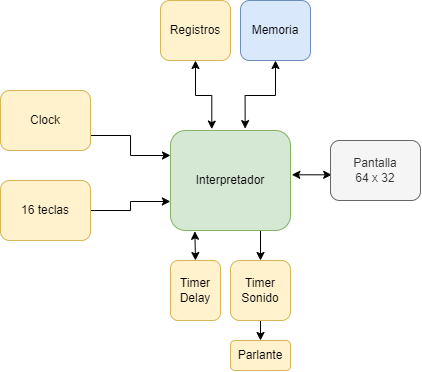
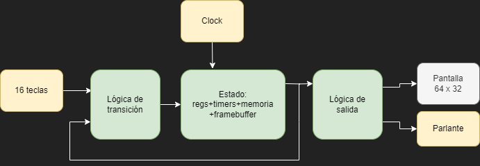
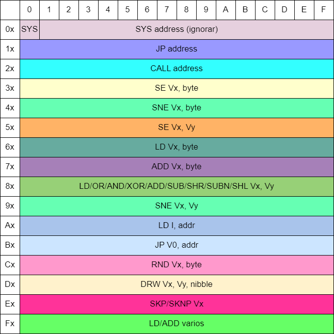

Intro a emuladores
Desarrollo de un emulador de CHIP-8
Gonzalo Avila · gzalo.com
Antes de empezar
¡Gracias por venir! Vamos a estar ~5 horas programando
Si algo no funciona bien o no se entiende, no duden en preguntar
Presentación en: emuladores.gzalo.com/diapositivas
Licencia: Creative Commons Attribution-NonCommercial 4.0 International LicenseEmulación vs simulación
Emulador: permite ejecutar programas en una plataforma distinta, modelándola de forma precisa
Simulador: reproduce el comportamiento del programa usando modelos matemáticos o lógicos
Ejemplo: emulador de nokia 1100 vs simulador de nokia 1100
Niveles de emulación
Hay muchas formas de emular una plataforma de hardware:
- Nivel transistor (analógico), tener en cuenta los circuitos y características físicas
- Nivel transistor (digital), asumiendo que se comportan digitalmente como llaves
- Nivel compuertas lógicas y registros (flip-flops)
- Nivel instrucciones
Dependiendo del nivel de precisión (y performance) deseado se suele elegir una.
CPU
- Lee instrucciones de la memoria y las ejecuta
- El Program Counter (PC) indica de donde leer la próxima
- Una señal de clock sincroniza los procesos internos
- Cada instrucción puede demorar distintos ciclos de clock
- Tiene registros internos con los que puede hacer cuentas
Ejemplo de programa básico
uint8_t miVariable = 0x10; // Variable de 1 byte
miVariable = miVariable + 0x08;LD V0, 0x10 ; Registro
ADD V0, 0x0860107008PC=0 · V0 = xxxx
PC=2 · V0 = 0x10
PC=4 · V0 = 0x18Manipulación de bits
En varios lugares necesitaremos trabajar a nivel de bits
Las variables numéricas se pueden pensar como una lista de bits 
Operaciones de bits
Aplican bit a bit (bitwise), no confundir con operaciones lógicas:
- A&B (AND): 1 si ambos son 1
- A|B (OR): 1 si alguno es 1
- A^B (XOR): 1 si alguno es 1 pero no los dos
- ~A (NOT): valor opuesto bit a bit
- A<<B (Left shift): mueve todo a la izquierda B lugares
- A>>B (Right shift): mueve todo a la derecha B lugares
Encender un bit
Máscara con 0s en todos los lugares excepto uno (o más), usar OR:
a = a | 0x08
a = a | (1<<3)
Apagar un bit
Máscara con 1s en todos los lugares excepto uno (o más), usar AND:
a = a & 0xDF
a = a & ~(1<<5)
Cambiar el estado un bit (togglear)
Máscara con 0s en todos los lugares excepto uno (o más), usar XOR:
a = a ^ 0x10
a = a ^ (1<<4)
Revisar el estado un bit
Máscara que tenga 1 en un solo lugar, usar AND:
Si el resultado es distinto de 0, el bit estaba setteado
if ((a & 0x40) != 0) ...
if ((a & (1<<6)) != 0) ...
Arquitectura CHIP-8
8 bits, Von Neumann. Creada por Joseph Weisbecker en 1977
Empezó como un interprete para la computadora COSMAC VIP
Memoria
- 4096 posiciones de un byte (8 bits)
Direcciones0x0000-0x0FFF - Toda la memoria es RAM y es lectura/escritura
- No se distingue entre código y datos, puede existir código que se modifique a sí mismo
- Regiones reservadas:
- Los primeros 512 bytes tenían el bootloader
- Los últimos 256 bytes se usaban para variables internas (ya no)
uint8_t memory[0x1000];Registros
- Son lugares donde se guardan datos internamente, se usan por distintas operaciones
- V0 a VF: 16 registros de 8 bits
- VF se usa como Carry flag: 1 si hubo carry o no borrow y en algunas operaciones gráficas
- I Index register, 12 bits, usado en varias operaciones relacionadas con la memoria
- PC Program Counter, 12 bits, apunta a la posición desde la cual se leen las instrucciones. Empieza en 0x200 (donde se cargan los programas) y se va incrementando
uint8_t v[16];
uint16_t pc = 0x200;
uint16_t index = 0x0000;Stack
- En el mismo se guardan las direcciones de retorno (próximo valor de PC) al llamar a una subrutina
- Debemos soportar al menos 24 niveles de stack. No es necesario usar el espacio de memoria reservado
- Con un stack pointer que puede ser de 8 bits podemos seguir el índice donde se almacenarán los elementos a pushear
uint16_t stack[24];
uint8_t stackPointer = 0;void push(uint16_t valor){
stack[stackPointer++] = valor;
}
uint16_t pop(){
return stack[--stackPointer];
}
Timers
- Son contadores de 8 bits que se decrementan cada 1/60 de segundo. Cuando llegan a 0 quedan ahí, no se reinician solos:
- Delay: se puede leer y escribir el valor
- Sonido: solo escritura. Hacer sonar un tono cuando no vale cero
uint8_t delayTimer = 0;
uint8_t soundTimer = 0;
Gráficos
- 64x32 monocromáticos
- La operación de dibujar sprites permite detectar colisiones
- Podemos usar un framebuffer o escribir directo en pantalla, siempre que tengamos un mecanismo para leer pixeles
uint8_t screen[64*32];void setPixel(uint8_t x, uint8_t y, uint8_t value) {
screen[ y * 64 + x ] = value;
}
uint8_t getPixel(uint8_t x, uint8_t y) {
return screen[ y * 64 + x ];
}Teclado
- Tiene 16 teclas (
0 a F)
Por lo general las teclas 8, 4, 6 y 2 son usados como flechas - Se pueden mappear a botones del teclado:
1 2 3 C 4 5 6 D 7 8 9 E A 0 B F
1 2 3 4 Q W E R A S D F Z X C V
Game loop
cargarRom();
while (!fin) {
manejarEventos();
if(delayTimer > 0) delayTimer--;
if(soundTimer > 0) soundTimer--;
avanzarEmulacion();
dibujarPantalla();
esperar(16 ms);
}avanzarEmulaciondebería correr ~500 veces por segundo. Asumiendo 60 fps, podemos correrlo 8 veces por frame como una aproximación- En otros emuladores más precisos se cuenta el delay por instrucción (en CHIP-8 no importa tanto)
- Se podrían agregar un modo pausa para ayudar al debugging
Funcionalmente
Estadot+1 = f(Estadot)
No recomentable para emuladores más complejos, ya que usa bastante memoria y procesamiento para calcular el nuevo estado
Eventos
- La biblioteca gráfica que estén usando debería proveer formas de detectar eventos (teclado, cierre de ventana, ...)
- Los de teclado suelen ser detectados una única vez: una cuando se presiona, una cuando se suelta
- Necesitamos convertirlos en variables booleanas:
-
uint8_t keys[16]; ... while (PollEvent(&event)) { if (event.type == QUIT) { fin = true; } else if(event.type == KEYDOWN){ if(event.key == KEY_1) keys[1] = 1; if(event.key == KEY_2) keys[2] = 1; if(event.key == KEY_3) keys[3] = 1; ... } else if(event.type == KEYUP){ if(event.key == KEY_1) keys[1] = 0; if(event.key == KEY_2) keys[2] = 0; if(event.key == KEY_3) keys[3] = 0; ... } }
Gráficos
- Para dibujar en la pantalla se usan sprites de 8 pixeles de ancho, y entre 1 y 15 de alto
- Se hace con un XOR del valor actual de la pantalla y el sprite
- Si algun pixel pasa de estar "prendido" (blanco) a estar "apagado" (negro), se settea VF a 1, si no se settea a 0
- No hay sincronización con el renderizado de un frame, es normal que parpadeen
Emulando gráficos
- Em las bibliotecas tenemos una función tipo
setPixel(x,y,value)ygetPixel(x,y)o si no, acceso a memoria de video - Suelen ser 24 o 32 bits:
blanco = 0xFFFFFFFFnegro = 0xFF000000 - Como la pantalla es chica, recomiendo que usen un factor de escala y dibujen cada píxel como un cuadrado de NxN
Tipografía 3x5
Se usa para mostrar puntajes y otros números
uint8_t font[80] = {
0x60, 0xa0, 0xa0, 0xa0, 0xc0,
0x40, 0xc0, 0x40, 0x40, 0xe0,
0xc0, 0x20, 0x40, 0x80, 0xe0,
0xc0, 0x20, 0x40, 0x20, 0xc0,
0x20, 0xa0, 0xe0, 0x20, 0x20,
0xe0, 0x80, 0xc0, 0x20, 0xc0,
0x40, 0x80, 0xc0, 0xa0, 0x40,
0xe0, 0x20, 0x60, 0x40, 0x40,
0x40, 0xa0, 0x40, 0xa0, 0x40,
0x40, 0xa0, 0x60, 0x20, 0x40,
0x40, 0xa0, 0xe0, 0xa0, 0xa0,
0xc0, 0xa0, 0xc0, 0xa0, 0xc0,
0x60, 0x80, 0x80, 0x80, 0x60,
0xc0, 0xa0, 0xa0, 0xa0, 0xc0,
0xe0, 0x80, 0xc0, 0x80, 0xe0,
0xe0, 0x80, 0xc0, 0x80, 0x80
};
for(int i=0;i<80;i++) {
memory[i] = font[i];
}Carga de archivos
Para cargar las ROMs, debemos abrir un archivo en modo binario y copiar cada byte a la memoria, desde la posición 0x200
Podemos intentar leer el tamaño completo, asumiendo que no falla si se acaba antes
FILE *input = fopen("game.ch8", "rb");
fread(&memory[0x200], 0xE00, 1, input);
fclose(input);Rust: File::open, luego read_to_end
Python: with open(..., "rb"), luego readinto
Java: new FileInputStream(...), luego read
ROMs de prueba y juegos
avanzarEmulacion
6010 LD V0, 0x10
6105 LD V1, 0x05
00E0 CLS
A214 LD I, 0x214
D015 DRW V0, V1, 5
A21A LD I, 0x219
7008 ADD V0, 0x08
D015 DRW V0, V1, 5
7008 ADD V0, 0x08
1204 JP 0x204
A4 AA EA AA A4 ; H O
84 8A 8E 8A EA ; L AEs el core de la emulación, se puede dividir en 3 partes:
- Fetch: lee el "código de operación"/opcode desde la memoria
- Decode: decide qué operación realizar en función del opcode
- Execute: ejecuta dicha operación
Fetch
Lee la instrucción a ejecutar desde la memoria. Cada opcode indica qué instrucción se deberá realizar.
En CHIP-8 son todos son de 2 bytes, big endian:
uint16_t opcode = (memory[pc]<<8) | memory[pc+1];
pc += 2;Decode
El primer nibble (medio byte) define el tipo general de instrucción. Hay varios subtipos con operandos de distintos largos, por ejemplo:
- 0x2NNN con NNN es un número de 12 bits
- 0x6XNN con X un número de 4 bits, NN un número de 8 bits
- 0xDXYN con X, Y, N números de 4 bits
uint8_t nibble1 = opcode >> 12;
uint8_t nibble2 = (opcode >> 8) & 0xF;
uint8_t nibble3 = (opcode >> 4) & 0xF;
uint8_t nibble4 = opcode & 0xF;
uint16_t address = opcode & 0xFFF;
uint8_t byte2 = opcode & 0xFF;
Execute
Básicamente un montón de ifs o un switch-case (o una branch table)
Execute (1)
00E0·CLS
borra la pantalla00EE·RET
vuelve de una subrutina:pc = pop()0NNN·SYS addr
eran llamadas a funciones de la COSMAC, se pueden ignorar1NNN·JP addr
salta a la posición NNN:pc = NNN;2NNN·CALL addr
llama a la subrutina en NNN:push(pc); pc = NNN;
Execute (2)
3XNN·SE Vx, byte
saltea si VX es igual a NN:if(Vx == NN) pc += 2;4XNN·SNE Vx, byte
saltea si VX no es igual a NN:if(Vx != NN) pc += 2;5XY0·SE Vx, Vy
saltea si VX es igual a VY:if(Vx == Vy) pc += 2;6XNN·LD Vx, byte
VX = NN7XNN·ADD Vx, byte
VX = VX + NN (el carry no afecta VF)
Execute (3)
8XY0·LD Vx, Vy
VX = VY8XY1·OR Vx, Vy
VX = VX | VY8XY2·AND Vx, Vy
VX = VX & VY8XY3·XOR Vx, Vy
VX = VX ^ VY8XY4·ADD Vx, Vy
Vx = Vx + Vy; VF es 0 o 1 si hubo carry(V[x]+V[y]>0xFF)
Execute (4)
8XY5·SUB Vx, Vy
Vx = Vx - Vy; VF es 0 o 1 si no hubo borrow(V[x] >= V[y])8XY6·SHR Vx
Vx = Vx >> 1; Vf es el bit que era el más bajo antes de la operación(V[x] & 1)8XY7·SUBN Vx, Vy
Vx = Vy - Vx; VF es 0 o 1 si no hubo borrow(V[y] >= V[x])8XYE·SHL Vx
Vx = Vx << 1; Vf es el bit que era el más alto antes de la operación(Vx >> 7)9XY0·SNE Vx, Vy
Saltea la próxima si VX != VY:if(Vx != Vy) pc += 2;
Execute (5)
ANNN·LD I, addr
index = NNNBNNN·JP V0, addr
salto con offset: pc = V0 + NNNCXNN·RND Vx, byte
Vx = rand(0,256) & NNEX9E·SKP Vx
Saltea si la tecla Vx está apretadaif(isDown(Vx)) pc += 2EXA1·SKNP Vx
Saltea si la tecla Vx no está apretadaif(!isDown(Vx)) pc += 2
Execute (6)
DXYN·DRW Vx, Vy, nibble
draw(Vx, Vy, N)dibuja un sprite en la posición Vx, Vy, 8 píxeles de ancho y N de alto. Cada fila de 8 pixeles se lee a partir de la posición I.- No cambia el valor de I pero sí el de VF, se settea a 1 si se apaga algún pixel, si no 0
-
V[0xF] = 0; for (int y=0;y<N;y++) { uint8_t actual = memory[index+y]; for (int x=0;x<8;x++) { if ((actual&(0x80)) != 0 && x+V[X]<64 && y+V[Y]<32) { if (getPixel(x+V[X],y+V[Y])) { setPixel(x+V[X],y+V[Y],0); V[0xF] = 1; } else { setPixel(x+V[X],y+V[Y],0xFFFFFF); } } actual <<= 1; } }
Execute (7)
FX07·LD Vx, DT
Vx = delayTimerFX0A·LD Vx, K
Espera a que se presione una teclaif(ningunaTecla) pc -= 2; else Vx = teclaPresionada;FX15·LD DT, Vx
delayTimer = Vx;FX18·LD ST, Vx
soundTimer = Vx;
Execute (8)
FX1E·ADD I, Vx
index = index + Vx (el carry no afecta VF)FX29·LD F, Vx
index = font[Vx] :index = Vx * 5;FX33·LD B, Vx
convierte a BCD (cada dígito en un byte de la memoria):memory[index] = Vx/100; memory[index+1] = (Vx/10)%10; memory[index+2] = Vx%10;FX55·LD [I], Vx
escriturafor(i=0;i<=x;i++) memory[index+i] = Vi;FX65·LD Vx, [I]
lecturafor(i=0;i<=x;i++) Vi = memory[index+i];
¡Eso es todo!
Si salió todo bien, al cargar la ROM deberían ver esto:

Pasos próximos
- Sonidos, mejorar timings, quirks
- Disassembler: sacar loop, solo decodificar e imprimir
- Muchas extensiones: HI-RES (64x128), SCHIP (128x64), MegaChip (colores)
- GameBoy (Z80)
- NES (6502)
- Arcade: Space Invaders (8080, manejo de interrupciones!), Pac-Man (Z80)
- Micro PIC (35 instrucciones), 8052 (CISC pero varios periféricos)
- Dynarec